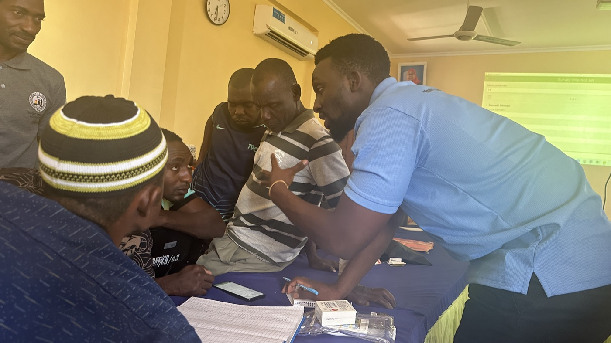
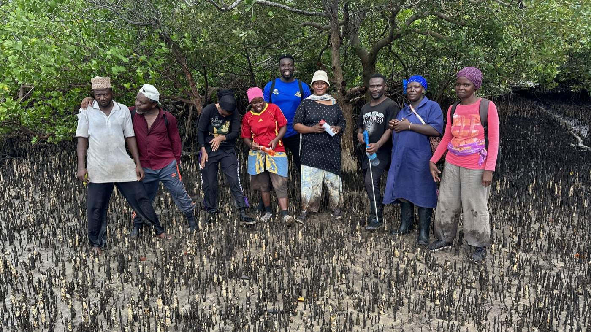
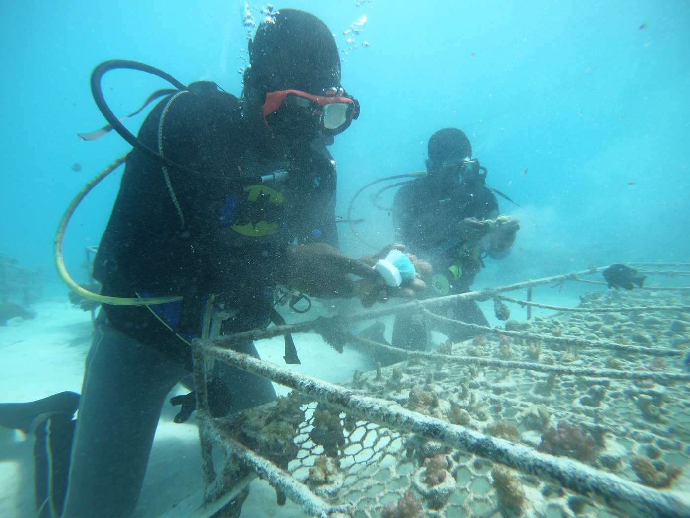
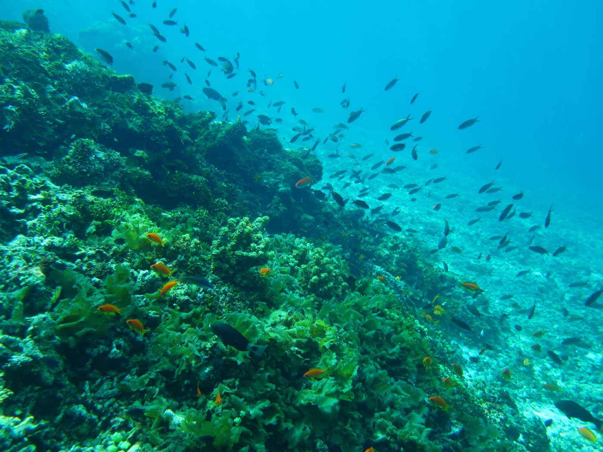
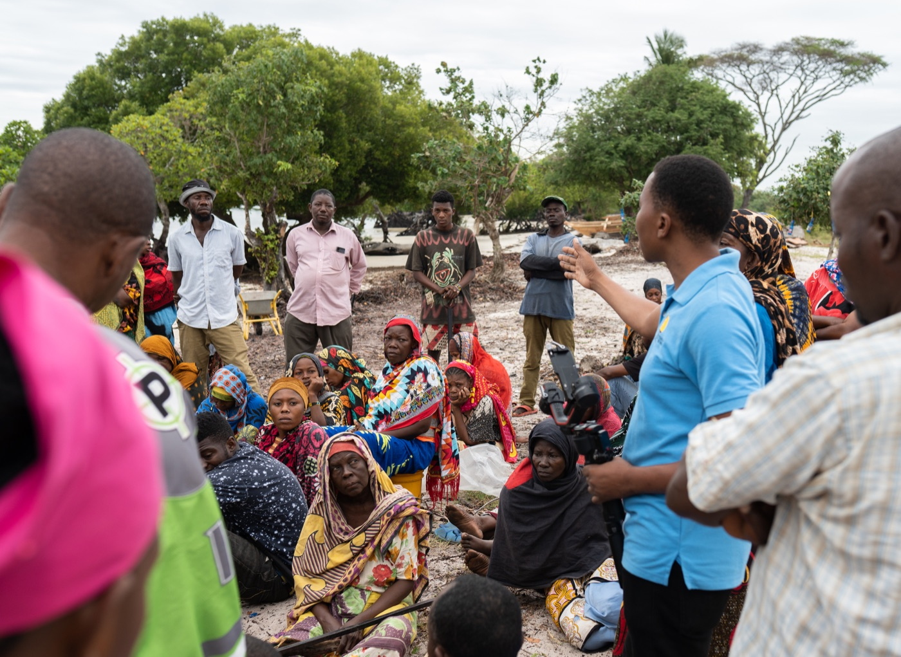
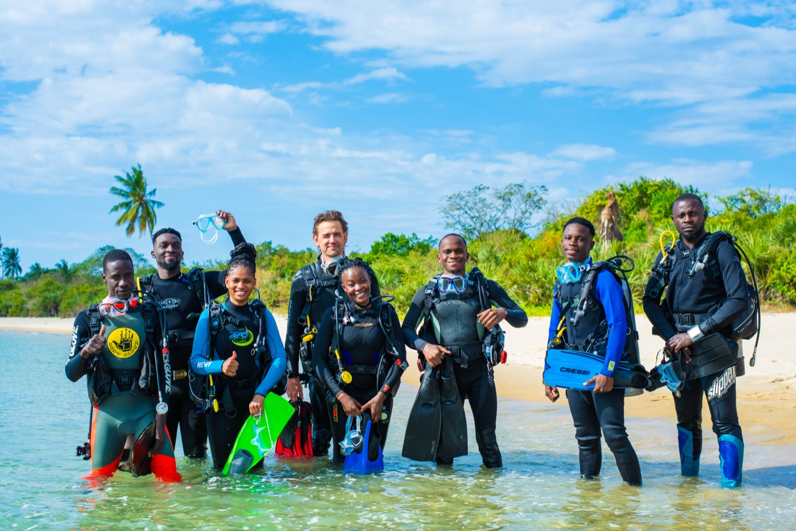
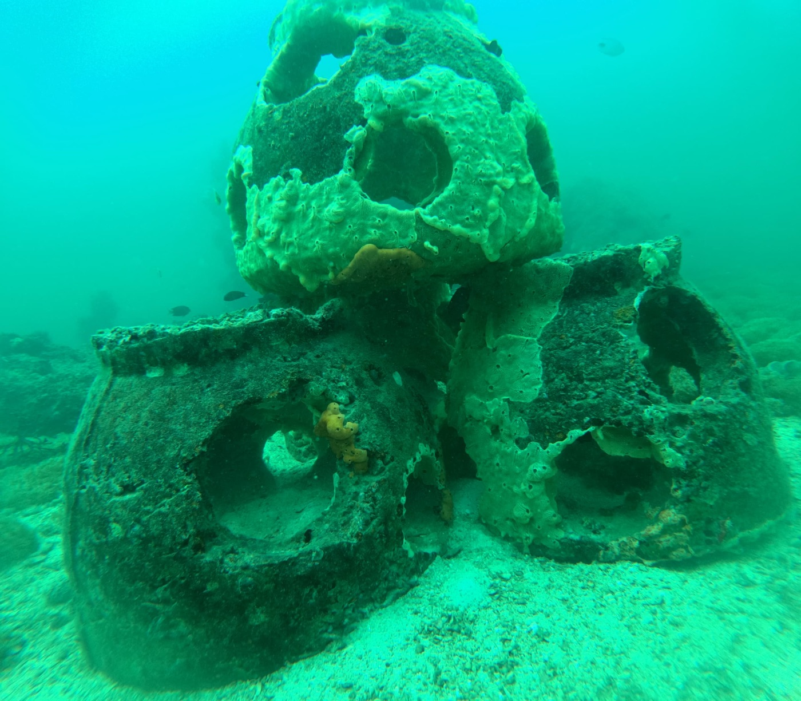
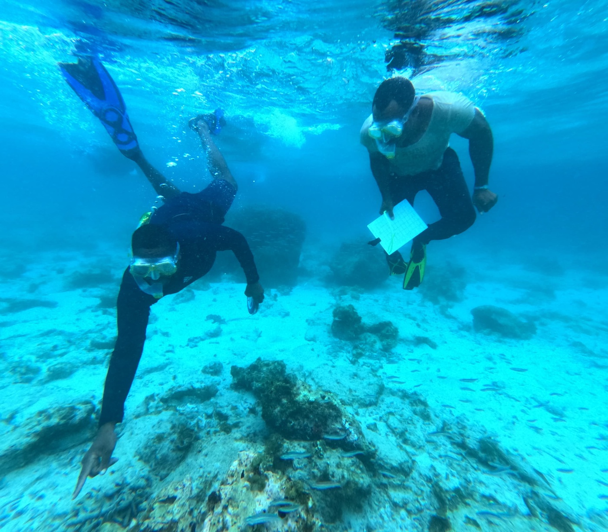

Impact & Ground Work
From the reef to the community — real outcomes on the Swahili Coast
Work on the Ground
My conservation work spans 50 communities across Zanzibar and the Tanga region of Northern Tanzania. Every protocol I design, every dataset I analyse, and every person I train is part of a connected effort to put ecological evidence at the centre of coastal management decisions.
Key Impact Areas
👥 Community Training — Fisheries Data Collection
Trained 200 community members across 50 communities (Zanzibar and Tanga region) on fisheries data collection protocols covering reef fish, prawns, and octopus. Training equipped local fishers with the skills to systematically record catch and effort data, turning everyday fishing activity into a conservation monitoring tool.
Outcomes: - 200 trained community monitors actively collecting fisheries data - 50 communities covered across Zanzibar and Northern Tanzania - Community-generated data fed directly into local management plans and adaptive management decisions - Increased local ownership of fisheries resource management
🤿 In-Water Monitoring — Coral Reef Visual Census
Trained 300+ in-water monitors in underwater visual census (UVC) techniques for coral reef monitoring, including data collection and analysis. A landmark achievement: 70 of these monitors are women — breaking a significant cultural barrier in coastal Tanzania, where women’s participation in snorkelling and underwater activities is highly unconventional.
Outcomes: - 300+ trained underwater visual census monitors - 70 women trained as in-water monitors — unprecedented in this region - Training extended beyond data collection to include analysis of survey data - Results used to guide and support coral reef restoration efforts
🪸 Coral Reef Restored Area
Provided data analysis and monitoring support for the restoration of 347 hectares of coral reef restored area, including the deployment of 1,300 artificial reef structures. This work involved designing data collection protocols, coordinating field surveys, and analysing reef health data to track restoration progress.
Outcomes: - 347 ha of coral reef area restored and monitored - 1,300 artificial reef structures deployed and tracked - Reef health data used to measure restoration effectiveness - Monitoring protocols adapted for long-term community fish replenishment zone management
🌿 Mangrove Restoration & Seagrass Monitoring
Supported the restoration of approximately 60 hectares of mangrove habitat through data collection protocol design and analysis. Also led seagrass monitoring surveys contributing to understanding of coastal habitat connectivity and ecosystem health.
Outcomes: - 60 ha of mangrove area supported through data-driven restoration - Seagrass monitoring integrated into multi-habitat coastal assessment - Restoration progress tracked with standardised protocols - Data informing coastal ecosystem management decisions
📋 Protocols & Survey Tools
Developed Mwambao’s second fish catch monitoring data protocol — a landmark institutional tool that standardises fisheries data collection across the organisation’s entire network. Created 10+ ecological survey forms covering all major survey types used by the ecological department.
Outcomes: - New fish catch monitoring protocol in active use across the network - 10+ survey forms designed for reef fish, coral, seagrass, mangrove, and octopus monitoring - Standardised data collection reducing errors and improving comparability - Institutional data quality significantly improved
📊 Ecological Data Analysis
Led all ecological data analysis for Mwambao’s ecological department — spanning fisheries, mangrove restoration, seagrass monitoring, and coral reef monitoring. Transforming raw field data from across the network into findings that drive conservation planning and adaptive management.
Outcomes: - End-to-end analysis across four ecosystem monitoring programmes - Annual reports and internal dashboards produced for each programme - Data-driven adaptive management recommendations delivered to teams - Analytical pipelines built in R for reproducible, efficient reporting
Field Photos








Professional Journey
A timeline of roles, projects, and milestones across Tanzania’s coastal conservation sector.
Research Assistant — BIOEEL-TZ, University of Dar es Salaam
Conducted fish biodiversity data collection and analysis, environmental parameter monitoring, and community capacity building workshops. Supported international conference reporting and co-produced a scientific documentary on anguillid eels in Tanzania as narrator and field researcher.
Ecological Data Manager — Mwambao Coastal Community Network
Took on the full ecological data management role at Mwambao — designing monitoring protocols, leading community training across 50 communities, building data pipelines in R, and producing annual reports across fisheries, coral reef, mangrove, and seagrass programmes.
Communications Manager — Sustainable Ocean Alliance Tanzania
Served as Communications Manager for SOA Tanzania — mobilising members, facilitating onboarding, bridging leadership and community members, and promoting active participation in ocean conservation programmes.
Marine Ecology Officer — The Nature Conservancy
Joined The Nature Conservancy as Marine Ecology Officer, leading fieldwork coordination, data collection protocols, and stakeholder engagement under the Pamoja Tuhifadhi Bahari Yetu project — working across Mtwara and Unguja North to strengthen marine co-management and biodiversity conservation.
By the Numbers
Partners & Collaborators
- The Nature Conservancy — current employer, Pamoja Tuhifadhi Bahari Yetu project
- Mwambao Coastal Community Network — ecological data management and community programmes
- Sustainable Ocean Alliance Tanzania — communications and member engagement
- EU Commission Tanzania — Youth Sounding Board advisory member
- University of Dar es Salaam / BIOEEL-TZ — research and documentary production
- Coastal fishing communities — Zanzibar and Tanga region (50 communities)
- Local Government Authorities — management plan integration and marine spatial planning